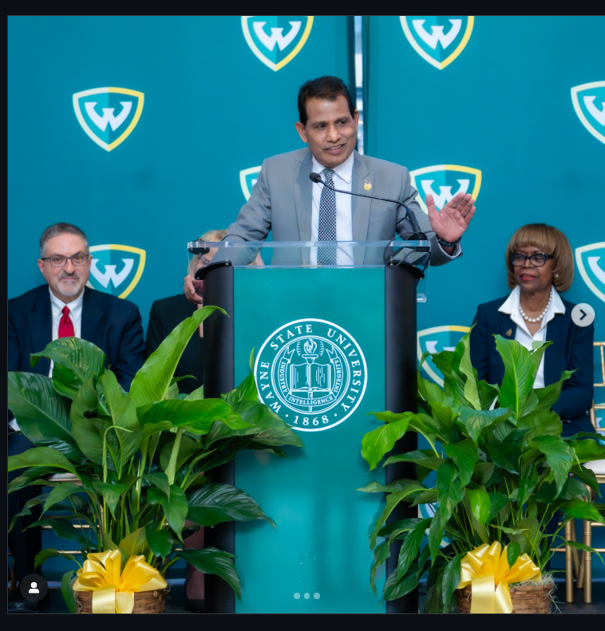

Learn the story behind Sunny’s leadership — entrepreneurship, community impact, and public service — and use Sunny Reddy AI to practice the conversations that matter most.
Speak to Sunny NowUse this site to explore Sunny’s work and priorities — then open the AI coach to rehearse speeches, interviews, leadership messaging, and tough Q&A.
Sunny Reddy is a Michigan-based entrepreneur and public leader who serves as an at-large member of the Wayne State University Board of Governors. He assumed office on January 1, 2025, after winning the November 5, 2024 general election, with a term that runs through December 31, 2032.
As a Wayne State University governor, Sunny focuses on strengthening student experience and building long-term institutional success through clear priorities and practical execution.
Sunny describes himself as an entrepreneur who has founded and grown businesses in Michigan, bringing a builder’s mindset shaped by real-world decision-making and accountability.
In his public statements, Sunny highlights consistent community support, especially during crisis moments—through relief efforts and local service initiatives.
In his published candidate responses, Sunny emphasized these focus areas for his time on the board:
Support for science, technology, engineering, and math through strong programs, modern facilities, and a commitment to forward-looking research and learning environments.
A focus on keeping education accessible by emphasizing reasonable tuition pathways and robust financial aid support for students.
A commitment to improving safety by working with community stakeholders and campus partners so students can learn in a secure environment.
In his public profile and candidate survey responses, Sunny shares that family plays a central role in his life and that his perspective on education was shaped by being a Wayne State student himself. He also describes his community involvement through philanthropic efforts, particularly in areas like relief support and helping families in need.
Note: The site’s AI experience is designed to reflect Sunny’s publicly shared values and leadership approach—helping visitors practice communication, decision-making, and execution with clarity and confidence.
You can ask about communication, leadership, university life, alumni engagement, entrepreneurship, community service, philanthropy, and more.
This is an AI coach modeled after Sunny Reddy background and values. It does not replace real-life conversations but gives you instant guidance 24/7.
Catch up on Sunny Reddy's videos and written content.